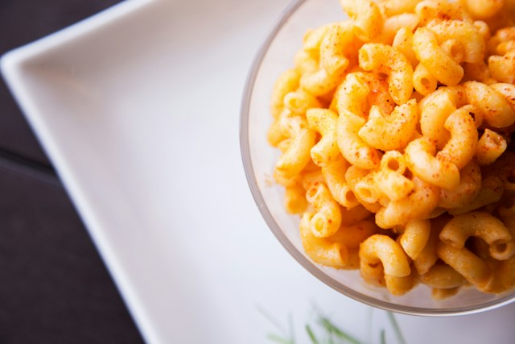

Macaroni & Cheese

Description
Macaroni and Cheese is a dish that can bring back childhood memories.
It can be a simple quick to make dish that pairs lovingly with many
other dishes. This recipe steps away from the store bought boxed mac
and cheese. It's just about as quick to make, and offers a unique made
from scratch taste.
Ingredients
- 8 ounces of elbow pasta
- 1 1/2 cups of Cheez Whiz
- 1/4 cup whole milk
- 1/4 teaspoon smoked paparika
Steps
-
Bring a pot of salted water to a steady boil.
-
Add in the pasta, cooking for ten minutes, ocasionally stirring.
-
Drain the pasta, keeping a very small amount of liquid in the
pot; if removed pasta from pot to drain, place them back in it.
-
Add in the Cheez Whiz, folding the pata into it.
-
If the cheese isn't melting good you can place it back on the
stove at a low heat level to help it melt.
-
After the cheese has melted, add the paparika and stir in the
milk.
Home